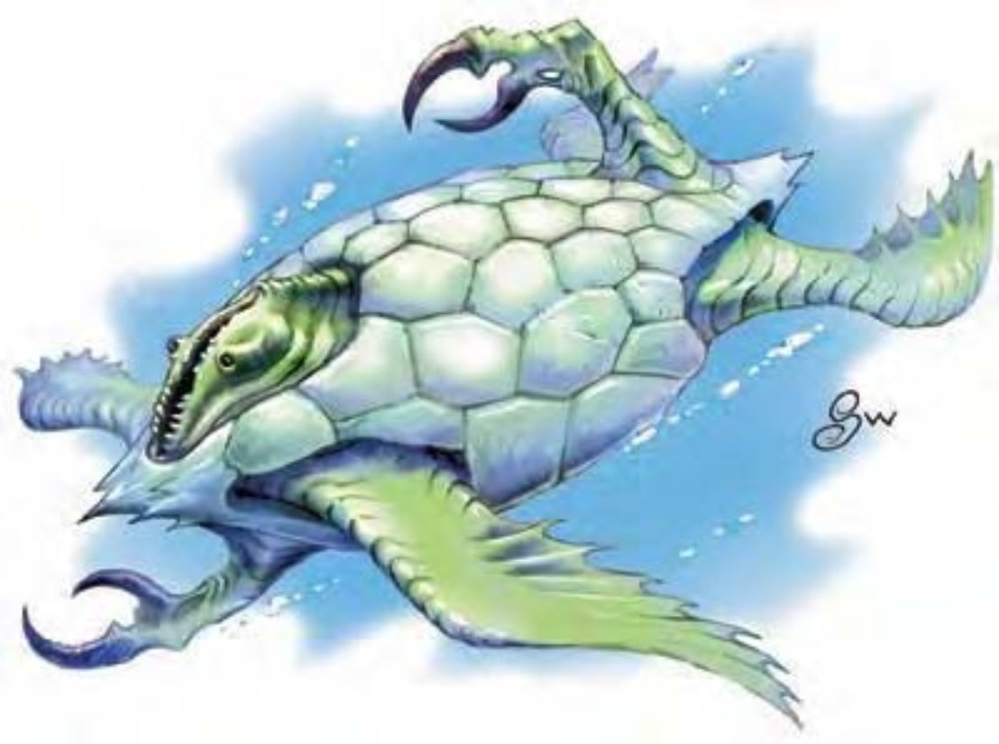

他们外形像是鳄龟，有仿锤形的六角纹壳。狭长的头两颚水平开阔与一般上下开阔的嘴形相异。龟壳开口伸出蟹状的爪子及鳍足。
突蟹龟是水元素界的杂食生物。乍看之下笨拙无害，但却是灵活的游泳者与战斗好手。
突蟹龟壳为蓝绿色，壳内是血肉躯体，延伸出七个肢干。其中四个鳍足用以移动，两个长有爪子，剩下一个负责支撑头部。壳有八个孔，每边各四，可让突蟹龟以最舒适的方式伸展肢干。
25岁以下为青年突蟹龟，壳长3英尺，体重60磅。成年突蟹龟为26至80岁，壳长6英尺，体重220磅。长老突蟹龟可活到150岁，壳长9英尺，体重500磅。
突蟹龟通晓水族语，且多嘴好辩，但通常只针对食物。
| 特性 / 阶段 | 青年突蟹龟 小型异界生物（外界、水系） |
成年突蟹龟 中型异界生物（外界、水系） |
长老突蟹龟 大型异界生物（外界、水系） |
|---|---|---|---|
| 生命骰 | 3d8+6 (19HP) | 7d8+14 (45HP) | 15d8+60 (127HP) |
| 先攻权 | +1 | +1 | +1 |
| 速度 | 10英尺（2格）、游泳90英尺 | 10英尺（2格）、游泳90英尺 | 10英尺（2格）、游泳90英尺 |
| 防御等级 | 22（+1体型、+1敏捷、+10天生）、接触12、措手不及21 | 23（+1敏捷、+12天生）、接触11、措手不及22 | 24（-1体型、+1敏捷、+14天生）、接触10、措手不及23 |
| 基本攻击/擒抱 | +3 / +1 | +7 / +10 | +15 / +25 |
| 攻击 | 啃咬+6近战（2d6+2） | 啃咬+10近战（2d8+3） | 啃咬+20近战（4d6+6） |
| 全力攻击 | 啃咬+6近战（2d6+2）及2爪抓+1近战（1d4+1） | 啃咬+10近战（2d8+3）及2爪抓+5近战（1d6+1） | 啃咬+20近战（4d6+6）及2爪抓+15近战（1d8+3） |
| 占用空间/可触距离 | 5英尺 / 5英尺 | 5英尺 / 5英尺 | 10英尺 / 5英尺 |
| 特殊攻击 | 精通擒抱、墨汁云 | 精通擒抱、墨汁云 | 精通擒抱、墨汁云 |
| 特殊能力 | 全域视野、黑暗视觉60英尺、对强酸与寒冷免疫、电击抗力10、火焰抗力10 | 全域视野、黑暗视觉60英尺、对强酸与寒冷免疫、电击抗力10、火焰抗力10 | 全域视野、黑暗视觉60英尺、对强酸与寒冷免疫、电击抗力10、火焰抗力10 |
| 豁免检定 | 强韧+5、反射+4、意志+4 | 强韧+7、反射+6、意志+6 | 强韧+13、反射+10、意志+10 |
| 属性 | 力量14、敏捷13、体质15、智力10、感知12、魅力9 | 力量16、敏捷13、体质15、智力10、感知12、魅力9 | 力量22、敏捷13、体质19、智力10、感知12、魅力9 |
| 技能 | 交涉+1、脱逃+7、躲藏+11、界域知识+6、聆听+7、搜索+6、侦察+9、察言观色+7、生存+1（在其他界域追踪+3）、游泳+10、绳技+1（捆绑+3） | 交涉+1、脱逃+11、躲藏+11、界域知识+6、聆听+11、搜索+14、察言观色+11、侦察+15、生存+1（在其他界域追踪+3）、游泳+11、绳技+1（捆绑+3） | 脱逃+19、躲藏+15、威吓+17、界域知识+18、聆听+21、搜索+22、察言观色+17、侦察+25、生存+1（在其他界域追踪+3）、游泳+14、绳技+1（捆绑+3） |
| 专长 | 盲战、闪避 | 盲战、闪避、猛力攻击 | 警觉、盲战、顺势斩、闪避、精通击破武器、猛力攻击 |
| 环境 | 水元素界 | 水元素界 | 水元素界 |
| 组织 | 单独或数尾（2-4） | 单独或数尾（2-4） | 单独或数尾（2-4） |
| 挑战级数 | 3 | 5 | 9 |
| 宝藏 | 标准 | 标准 | 标准 |
| 阵营 | 总是绝对中立 | 总是绝对中立 | 总是绝对中立 |
| 进化 | 4-6HD（小型） | 8-14HD（中型） | 16-24HD（大型）、25-45HD（超大型） |
| 等级修正值 | ― | ― | ― |
突蟹龟脾气不错，但被惹毛时也非常恐怖。他们对于食物十分计较，很容易因为怀疑新人抢食物而发怒。
精通擒抱（特异）：如果突蟹龟利用啃咬或爪击击中对手，即可利用即时动作进行擒抱攻击，且不会引发对方借机攻击。在水中，突蟹龟可拖着同体型大小以下的猎物一起移动，移动速度不变，但无法奔跑。他们偏好先抓住单一对手，再放手抛离使其远离伙伴。
墨汁云（特异）：突蟹龟每分钟可喷出一团漆黑的墨汁云团，半径30英尺，视为即时动作。其效果与“云雾术”类似，施法者等级等同突蟹龟的生命骰。出水面后，墨汁云化为一条30英尺长的细流，突蟹龟用以喷向对手眼睛。被喷到的生物必须通过反射检定，否则目盲1轮。青年突蟹龟的DC=13，成年突蟹龟DC=15，长老突蟹龟DC=21。豁免检定DC的调整值与体质调整值相同。
全域视野（特异）：龟壳上的隙缝可以让突蟹龟同时看到四周，使他在进行“搜索”和“侦察”检定时具有+2种族加值，同时也不会被夹击。
技能：突蟹龟在进行任何特殊动作或闪身避祸时，“游泳”检定具有+8种族加值。即使分心或受困，他们在进行“游泳”检定时都可以随时取10。若以直线前进，则可在游泳时进行奔跑动作。